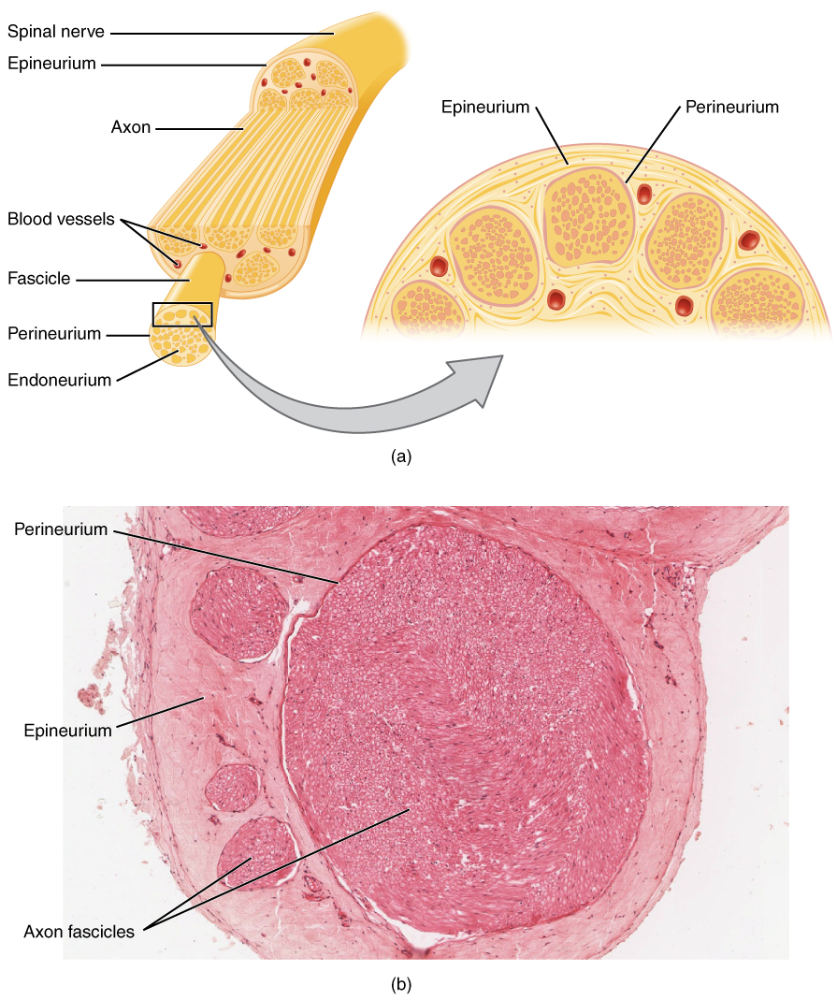

DX.2 — Polyneuropathie diabétique distale symétrique
1. Définition
La Société allemande du diabète définit la neuropathie diabétique comme une maladie des nerfs périphériques due au diabète, sans autre causeddg.
Cette maladie est cliniquement manifeste ou infraclinique, car des tests anormaux peuvent précéder les symptômesddg.
Elle peut toucher le système somatique, le système autonome, ou les deux, et cette étendue appartient à la définitionddg.
La forme distale symétrique sensitivo-motrice est la polyneuropathie que ce cours décrit, car elle suit la longueur des axonesddg.
La définition exclut une autre cause, donc un déficit en cobalamine ou une intoxication ne porte pas ce nomddg.
La Revue médicale suisse décrit la même atteinte comme distale, symétrique et dépendante de la longueur des nerfsrms.
Elle commence aux orteils, remonte en chaussette, puis gagne les doigts, ce qui caractérise cette forme et non une mononeuropathiermsage.
Les petites fibres et les grosses fibres peuvent être lésées ensemble, car la définition clinique ne sépare pas toujours les deuxrmsage.
Une forme infraclinique existe lorsque les symptômes manquent mais que les tests quantitatifs sont déjà pathologiquesddg.
La douleur n'est pas exigée par la définition, car la forme indolore est fréquente et reste une neuropathie diabétiqueddg.
Le nerf périphérique du schéma montre l'axone dans l'endonèvre, car c'est cette fibre que le diabète altère en distalopenstaxn.
La fenêtre du nerf périphérique montre les enveloppes que la définition place autour de l'axone atteintopenstaxn.
Nerf périphérique, OpenStax
Le dessin en couleur montre un nerf spinal, puis une coupe, puis une lame histologique rose d'un fasciculeopenstaxn.
L'épinèvre constitue l'enveloppe du nerf entier, le périnèvre celle du fascicule, et l'endonèvre celle des axonesopenstaxn.
Les vaisseaux courent dans ces enveloppes, ce qui rappelle que l'ischémie peut aggraver la fibre déjà métaboliquement fragileopenstaxn.
La lame rose confirme que le fascicule est un fait histologique, et non un schéma inventé pour la leçonopenstaxn.
Cette image enseigne l'anatomie du nerf, mais elle ne prouve pas à elle seule qu'un patient a une neuropathie diabétiqueopenstaxn.
La licence Creative Commons Attribution 3.0 permet la copie si OpenStax College et la source sont nommésopenstaxn.

2. Épidémiologie en Suisse, puis en Europe
La mise au point suisse de 2019 tient le diabète pour la cause de loin la plus commune des polyneuropathiesrms.
Cette neuropathie touche 30 à 50 pour cent des personnes avec un diabète de type 2rms.
Elle atteint jusqu'à 50 à 60 pour cent des personnes avec un diabète de type 1 dans la même mise au pointrms.
Dans 25 pour cent des cas, l'atteinte se manifeste par des douleurs qui pèsent sur la qualité de vierms.
Une autre revue suisse de 2019 estime la prévalence de la polyneuropathie diabétique à 30 pour centrmsage.
Après 10 ans d'évolution d'un diabète de type 2, la douleur neuropathique a une prévalence de 20 pour centrmsage.
L'intolérance au glucose s'accompagne d'une polyneuropathie dans 11 à 25 pour cent des cas, contre 7,1 pour cent dans la population de référencermsage.
La pratique allemande de 2021 retient une prévalence moyenne d'environ 30 pour cent dans les diabètes de type 1 et de type 2 manifestesddg.
Environ 13 à 26 pour cent des personnes diabétiques ont une neuropathie douloureuse selon cette pratiqueddg.
La neuropathie distale participe à 85 à 90 pour cent de l'étiologie du syndrome du pied diabétiqueddg.
Elle prédit aussi la morbidité et la mortalité cardiovasculaires, ce qui dépasse le seul problème du piedddg.
La neuropathie autonome coexiste dans environ 50 pour cent des cas lorsqu'une forme sensitivomotrice est déjà prouvéeddg.
Chez des patients déjà diabétiques, une autre étiologie de la neuropathie est présente dans 53 pour cent des cas examinésrms.
Le contrôle glycémique réduit nettement le risque de polyneuropathie dans le type 1, et la preuve est moindre dans le type 2rms.
Cette différence tient probablement au fait que l'atteinte est déjà en partie installée lorsque le type 2 est découvertrms.
Le dépistage doit être systématique, par diapason ou monofilament, car la forme indolore échappe à la seule questionrms.
La Société suisse d'endocrinologie et de diabétologie classe un risque bas si la sensibilité protectrice est intacte et les artères aussisged.
Le risque augmente si un monofilament de 10 grammes n'est pas perçu sur au moins un quart des sitessged.
Le même classement vaut si la pallesthésie est à 4 sur 8 ou moins, car le flyer suisse unit les deux seuilssged.
Le risque est haut lorsqu'une artériopathie s'ajoute, et très haut après un ulcère, une amputation, une dialyse ou un pied de Charcotsged.
Le monofilament identifie un risque d'ulcère avec une sensibilité de 65 à 90 pour cent et une spécificité de 35 à 85 pour centsgedz.
Ces fourchettes viennent d'études prospectives reprises par le document suisse, donc elles ne sont pas une performance locale mesuréesgedz.
La Société allemande décrit des formes fréquentes, chronique douloureuse et indolore, et des formes rares, aiguë douloureuse et focaleddg.
L'amyotrophie diabétique reste rare dans cette description, et elle ne se confond pas avec la forme distale symétriqueddg.
3. Physiopathologie
Les axones les plus longs souffrent en premier, ce qui explique le début aux orteils et la montée en chaussettermsage.
Les grosses fibres portent le tact fin et la vibration, donc leur perte efface le diapason et le sens de positionrms.
Les petites fibres portent la douleur et la température, donc leur perte laisse un pied qui se blesse sans alerterrms.
L'hyperglycémie prolongée est le facteur que la définition relie à la maladie, car elle survient du fait du diabèteddg.
La durée du diabète, l'hypertension, l'artériopathie, la néphropathie et le tabac augmentent le risque selon la pratique allemandeddg.
La dépression, l'obésité viscérale, l'hyperlipidémie et le manque d'activité figurent dans la même liste de facteurs associésddg.
L'âge, la taille et le poids comptent aussi, car un axone plus long a plus de chemin à entretenirddgrmsage.
Le déficit sensitif ouvre la porte au mal perforant, car le patient ne retire pas le pied d'un appui blessantrms.
Les orteils en griffe et en marteau concentrent la pression sous les têtes métatarsiennes et au bout des orteilssgedz.
L'hyperkératose marque ces appuis, et la Société suisse demande de ne pas poser le monofilament au milieu d'une corne épaissesgedz.
Une ischémie ajoutée transforme le risque, car le flyer suisse sépare le pied neuropathique du pied artériopathiquesged.
Le contrôle glycémique protège mieux le nerf dans le type 1, car le type 2 arrive souvent avec une atteinte déjà commencéerms.
La forme aiguë douloureuse, parfois appelée névrite insulinique, est rare et distincte de la forme chronique longueur-dépendanteddg.
La dysautonomie peut assécher la peau et troubler la pression artérielle, car les petites fibres autonomes suivent souvent les sensitivesrmsage.
Une ataxie apparaît lorsque les grosses fibres ne renseignent plus la position, et la marche devient alors instablermsage.
La fenêtre chaîne distale doit relier l'axone long, la perte sensitive et l'ulcère plantairermsage.
De l'axone long à l'ulcère
L'axone du pied est le plus long, donc il est le premier à ne plus conduire lorsque le diabète l'épuisermsage.
La vibration disparaît avec les grosses fibres, et la douleur disparaît avec les petites, parfois dans le même piedrms.
Un appui répété sur une peau insensible provoque l'hyperkératose, puis la plaie, sous les têtes métatarsiennessgedz.
Le mal perforant est ainsi une conséquence du déficit, et non une maladie de peau isoléerms.
Si les artères sont aussi malades, la plaie cicatrise mal, et le risque change de catégorie sur le flyer suissesged.
Traiter la glycémie vise cette chaîne en amont, avec une preuve plus nette dans le diabète de type 1rms.
Fermer4. Démarche diagnostique
On écarte d'abord l'ulcère infecté, la nécrose ischémique et le pied de Charcot, car ils imposent un centre spécialisésged.
Le flyer suisse envoie ces trois situations vers une structure de niveau 3, sans attendre le prochain contrôle annuelsged.
Une autre cause est présente dans 53 pour cent des neuropathies de patients diabétiques, donc le diabète ne ferme pas le bilanrms.
La mise au point suisse demande un bilan de base même lorsque la cause paraît évidenterms.
Ce bilan rapporte la glycémie ou l'hémoglobine glyquée, la cobalamine et l'électrophorèse des protéinesrms.
Les recommandations françaises, citées par la même revue, ajoutent la formule sanguine, la protéine C réactive, le foie, la créatinine et la thyréostimulinerms.
Une carence en cobalamine imite la forme distale, et c'est pourquoi ce dosage précède l'attribution de tout le tableau au diabèterms.
Une gammapathie se cherche par l'électrophorèse, car elle peut accompagner ou remplacer la cause diabétiquerms.
Une asymétrie, une atteinte proximale ou une paralysie douloureuse de la cuisse sortent de la forme distale symétriquermsageddg.
Cette amyotrophie est rare, et elle doit faire adresser, car la revue réserve l'électroneuromyogramme aux présentations atypiquesrmsddg.
Un canal carpien surajouté reste possible, surtout si la nuit et le territoire du médian dominent un seul côtérms.
L'alcool et une chimiothérapie se demandent, car la revue suisse les place parmi les causes fréquentes à ne pas manquerrms.
Si le patient ne souffre pas et marche sans plaie, on ne traite pas le symptôme absent, mais on classe quand même le risque de piedddgsged.
La fenêtre des situations urgentes du pied dit ce qui part le jour même vers un centresged.
Adresser au neurologue pour un électroneuromyogramme doit rester l'exception de la forme typique, et la règle de la forme bizarrerms.
Pied qui ne peut pas attendre
Un ulcère, un pied de Charcot ou une nécrose ischémique partent vers le niveau 3, car le flyer suisse l'écritsged.
On cherche une porte d'entrée cutanée, car la pratique allemande dit qu'une lésion de peau oriente vers l'infectionddg.
Un pied chaud, rouge et gonflé, souvent peu douloureux, fait évoquer le Charcot et impose la déchargesged.
L'absence de pouls ne se rassure pas par une neuropathie connue, car l'artériopathie change la catégorie de risquesged.
On ne reporte pas ces avis au contrôle annuel, car le rythme annuel ne concerne que le risque bassged.
Après l'urgence locale, le bilan de cause reste dû, car 53 pour cent de ces neuropathies ont une autre étiologierms.
Fermer5. Anamnèse ciblée et drapeaux rouges
On demande d'abord si les pieds brûlent la nuit, car la forme douloureuse chronique est fréquente et gêne le sommeilddg.
On demande aussi si le patient marche sur du coton, car cette image décrit souvent la perte du tact distalrmsage.
L'ancienneté du diabète se chiffre, car la durée figure parmi les facteurs associés à la neuropathieddg.
Un diabète de type 2 connu depuis 10 ans fait chercher la douleur, dont la prévalence atteint alors 20 pour centrmsage.
On cherche un ulcère passé, une amputation, une dialyse ou un pied de Charcot, car ces antécédents classent le risque très hautsged.
L'alcool, une chimiothérapie et des fourmillements des mains se demandent, car une autre cause coexiste souventrms.
Des malaises au lever font chercher l'hypotension orthostatique, car la dysautonomie accompagne souvent la forme sensitivermsage.
Une diarrhée qui alterne avec une constipation, ou une impression d'estomac plein, oriente vers la même dysautonomiermsage.
Une faiblesse douloureuse de la cuisse, récente et asymétrique, ne constitue pas l'histoire de la forme distale symétriqueddgrmsage.
Si le patient dit ne rien sentir et ne pas souffrir, le risque de plaie reste, car la forme indolore est fréquenteddg.
On demande qui regarde les pieds chaque jour, car la Société suisse tient l'éducation pour une part indispensable du soinsged.
Les chaussures, les semelles et les cors se décrivent, car la pression répétée prépare l'ulcère sur un pied insensiblesgedz.
Une douleur strictement nocturne d'une main, dans le médian, fait ouvrir un canal carpien plutôt que la polyneuropathie seulerms.
La fenêtre des douleurs neuropathiques dit ce qui est typique d'une petite fibre et ce qui ne l'est pasddg.
On demande la date du dernier examen des pieds, car un intervalle trop long laisse passer une corne qui devient plaiesged.
On demande si le patient marche pieds nus à la maison, car un sol chaud ou un objet oublié blesse un pied insensiblesged.
On demande les hypoglycémies récentes, car une baisse rapide du sucre peut accompagner la forme aiguë douloureuse rareddg.
On note les médicaments du moment, car la pratique allemande exige cette anamnèse avant tout antalgiqueddg.
Douleur typique ou non
Une brûlure des deux pieds, plus nette au repos et la nuit, est typique de la forme douloureuse chroniqueddg.
Une absence totale de douleur malgré une plaie est typique de la forme indolore, et elle est fréquenteddg.
Une douleur aiguë au moment d'une amélioration glycémique rapide peut être la forme rare dite névrite insuliniqueddg.
Une douleur d'une seule cuisse, avec une parésie, n'est pas typique de la forme distale et fait chercher l'amyotrophieddg.
Le questionnaire de douleur neuropathique en quatre questions peut coter la plainte, car la revue suisse le cite pour suivre la douleurrms.
Si la vie quotidienne n'est pas gênée, la pratique allemande dit qu'il n'est pas nécessaire de traiter le symptômeddg.
Fermer6. Examen physique ciblé, région par région
L'examen des pieds vient en premier, car c'est là que la longueur de l'axone rend le déficit visiblermsage.
Le monofilament de 10 grammes se pose sur au moins quatre sites plantaires de chaque piedsgedz.
Le patient ferme les yeux, après une démonstration à l'avant-bras, afin de ne pas voir le moment ni le lieusgedz.
On courbe le filament pendant environ 1 seconde, en évitant la corne et l'ulcèresgedz.
La sensibilité protectrice est suffisante seulement si les quatre sites sont reconnus, car le document suisse l'exigesgedz.
Ne pas sentir le filament de 10 grammes sur au moins un site sur quatre signe une neuropathie des grosses fibres cliniquement significativesgedz.
Le diapason gradué de 128 hertz se pose sur la base interne du gros orteil, après une démonstration au poignetsgedz.
Le patient dit quand la vibration cesse, et l'examinateur lit le triangle sur l'échelle de 0 à 8sgedz.
Une valeur de 4 sur 8 ou moins est pathologique, et une valeur supérieure à 4 sur 8 correspond à une sensibilité protectrice conservéesgedz.
Ce diapason corrèle avec le biothésiomètre, avec un coefficient de moins 0,9 et une valeur de p inférieure à 0,001sgedz.
Il prédit moins bien l'ulcère que le monofilament, donc les deux tests ne se remplacent passgedz.
Les jambes se regardent ensuite pour les réflexes achilléens et le tonus, car la forme motrice distale les affaiblitrmsage.
Les mains se testent après les pieds, car les doigts ne sont touchés qu'une fois la chaussette déjà constituéermsage.
La peau, les ongles, les déformations et les chaussures font partie de l'examen annuel exigé au risque bassged.
Les pouls du pied, tibial postérieur et pédieux, se palpent, car l'artériopathie change la catégoriesged.
Si ces pouls manquent, on remonte au creux poplité et au scarpa, comme le critère suisse du suivi le demandesgedm.
La région des pieds et du monofilament détaille les quatre sites et la seconde d'appuisgedz.
La région de la peau et des chaussures doit chercher la corne, la griffe et l'appuisgedz.
On répète le diapason, car une seule lecture instable ne doit pas classer à elle seule le risque de plaiesgedz.
Monofilament de 10 grammes
On montre d'abord le filament sur l'avant-bras, car le patient doit savoir ce qu'il a à reconnaîtresgedz.
Les yeux fermés, on teste au moins quatre sites plantaires par pied, là où la figure suisse les marque en bleusgedz.
On courbe le nylon pendant environ 1 seconde, au bord de la corne et jamais sur un ulcèresgedz.
Le patient dit oui et, si on le lui demande, où il a senti, car un oui au hasard ne compte passgedz.
Manquer au moins un site sur quatre associe une neuropathie des grosses fibres cliniquement significativesgedz.
La sensibilité pour prédire l'ulcère va de 65 à 90 pour cent, et la spécificité de 35 à 85 pour centsgedz.
FermerDiapason de 128 hertz
On pose d'abord le diapason au poignet, puis sur la base interne du gros orteil, les yeux ferméssgedz.
L'échelle va de 0 à 8, et le patient annonce l'instant où la vibration disparaîtsgedz.
Une lecture de 4 sur 8 ou moins est pathologique selon le document de la Société suissesgedz.
Sentir la vibration au-dessus de 4 sur 8 correspond à une sensibilité protectrice encore présentesgedz.
Le coefficient de corrélation avec le biothésiomètre est de moins 0,9, avec une valeur de p inférieure à 0,001sgedz.
On répète la mesure, car le document demande de vérifier qu'elle est reproductiblesgedz.
FermerJambes, réflexes et marche
Le réflexe achilléen se compare des deux côtés, car la forme distale l'émousse de façon symétriquermsage.
Une ataxie à la marche indique que le sens de position des grosses fibres est perdurmsage.
On fait fermer les yeux en station, car l'instabilité augmente lorsque la vue ne compense plusrmsage.
Une parésie proximale douloureuse d'un seul côté doit sortir de cette région, car elle indique une amyotrophiermsage.
Les mollets se palpent, car une amyotrophie distale accompagne les formes motrices avancéesrmsage.
Ce temps vient après les pieds, car la longueur de l'axone rend le signe plus précoce à l'orteil qu'au genourmsage.
FermerMains, après les pieds
Les doigts ne s'engourdissent qu'après la montée en chaussette, donc une main isolée n'inaugure pas cette polyneuropathiermsage.
On compare les pulpes des doigts aux orteils, car le gradient distal confirme la dépendance à la longueurrmsage.
Une atteinte limitée au médian, nocturne, doit faire chercher un canal carpien surajoutérms.
Les deux mains symétriques, avec les deux pieds, restent dans la forme longueur-dépendantermsage.
On ne conclut pas à une polyneuropathie des mains si les pieds sont strictement normauxrmsage.
Le déficit des petites fibres des doigts se teste par la piqûre et le chaud, après le diapasonrms.
FermerPeau, déformations, chaussures
Les orteils en griffe ou en marteau créent des appuis sous les têtes métatarsiennes et au bout des orteilssgedz.
L'hyperkératose montre ces appuis, et elle se note avant de choisir le site du monofilamentsgedz.
On regarde entre les orteils, car une macération y prépare une porte d'entréesged.
Les chaussures et les semelles doivent être inspectées à chaque visite de risque augmenté, au moins deux fois par ansged.
Une déformation fait passer au niveau 2, avec un avis de chaussage orthopédiquesged.
L'éducation du patient sur ces gestes se répète, car le flyer suisse la tient pour indispensablesged.
FermerPouls et perfusion
On palpe le tibial postérieur et le pédieux des deux pieds, car le critère suisse du suivi l'inclutsgedm.
Si le pied est silencieux, on palpe le creux poplité puis le scarpa, afin de situer le niveausgedm.
Une artériopathie, avec ou sans neuropathie, indique au moins un risque haut sur le flyer suissesged.
Le risque haut se revoit au moins quatre fois par an, avec un avis d'angiologie pour confirmersged.
Le monofilament normal ne rassure pas si les pouls manquent, car les deux lésions s'additionnentsged.
Une nécrose ou une gangrène quitte ce temps de dépistage et part vers le centre de niveau 3sged.
Fermer7. Approche syndromique
7.1 Forme infraclinique
La forme infraclinique n'a ni symptôme ni signe, mais des tests quantitatifs déjà pathologiquesddg.
Elle compte quand même, car la définition allemande inclut la maladie infraclinique des nerfs périphériquesddg.
Le dépistage par monofilament ou diapason la découvre, puisque la revue suisse le rend systématiquerms.
7.2 Forme chronique douloureuse
La forme chronique douloureuse est fréquente, avec des brûlures distales qui gênent la vie quotidienneddg.
Elle concerne 13 à 26 pour cent des personnes diabétiques selon la pratique allemande, et 25 pour cent dans la revue suisseddgrms.
Après 10 ans de diabète de type 2, la prévalence douloureuse atteint 20 pour cent dans la seconde revue suissermsage.
Le traitement est symptomatique, car il ne répare pas l'axone, et il ne commence que si la vie est gênéeddg.
7.3 Forme indolore
La forme indolore est fréquente, et elle expose au mal perforant parce que le déficit sensitif n'alerte plusddgrms.
Ne pas sentir le monofilament sur un site sur quatre suffit à la classer à risque, même sans plaintesged.
L'éducation et les chaussures priment ici, car un antalgique n'a pas de cible si la douleur est absenteddgsged.
7.4 Forme aiguë douloureuse
La forme aiguë douloureuse est rare, et la pratique allemande la rapproche de la névrite dite insuliniqueddg.
Elle ne se traite pas comme une ischémie aiguë du pied, car la peau peut rester chaude sans nécroseddg.
On vérifie quand même l'absence d'ulcère et de Charcot, car ces urgences sont rares mais elles changent la voiesged.
7.5 Atteinte autonome associée
Lorsque la forme sensitivomotrice est prouvée, une neuropathie autonome coexiste dans environ 50 pour cent des casddg.
La peau sèche, les malaises au lever et l'alternance de diarrhée et de constipation en sont les signes d'appelrmsage.
Cette association ne change pas le nom de la forme distale, mais elle élargit la surveillance au-delà du piedddg.
8. Diagnostic positif et critères
Le diagnostic est clinique lorsque des symptômes et des déficits distaux symétriques surviennent chez une personne diabétique, sans autre causeddg.
Un score de déficit neuropathique d'au moins 3 points, ou un instrument du Michigan d'au moins 2,5 points, oriente vers la formeddg.
Des symptômes cotés au moins 3, sans déficit, rendent la neuropathie seulement possible, et non certaineddg.
Des déficits sans symptôme la rendent aussi possible, et la pratique allemande demande alors les deux pour affirmerddg.
Côté suisse, ne pas percevoir le monofilament de 10 grammes sur au moins un quart des sites affirme le risque neuropathiquesged.
Une pallesthésie de 4 sur 8 ou moins, au diapason de Rydel-Seiffer, confirme le même risque neuropathiquesged.
L'électroneuromyogramme ne reste pas le premier geste d'une forme typique, car la revue le réserve aux tableaux atypiquesrms.
Il devient utile si l'asymétrie, la vitesse ou un déficit moteur inattendu font douter de la seule longueurrms.
Le diagnostic n'est pas retenu si une autre cause explique mieux les signes, car la définition exclut ces autres causesddg.
C'est pourquoi 53 pour cent des neuropathies chez des personnes diabétiques gardent une étiologie alternative à chercherrms.
| Élément | Ce qui suffit pour le risque de pied | Ce qui ne suffit pas pour affirmer la forme |
|---|---|---|
| Monofilament | Dix grammes non perçus sur au moins un site parmi quatre. | Un seul essai sur une corne, qui fausse le toucher. |
| Diapason | Quatre sur huit ou moins au gros orteil. | Une seule mesure non reproduite. |
| Scores allemands | Symptômes et déficits ensemble, avec un déficit d'au moins 3 ou un Michigan d'au moins 2,5. | Un symptôme isolé, qui ne rend la forme que possible. |
| Électrique | Utile si le tableau est atypique. | Inutile pour nommer une forme distale déjà typique. |
Les symptômes et les déficits ensemble permettent d'affirmer la forme, alors que l'un sans l'autre ne la rend que possibleddg.
9. Examens complémentaires
9.a Référence
Pour la forme typique, la référence est clinique, car aucun examen ne remplace le gradient distal et le monofilamentddgsged.
La biopsie cutanée reste un repère des petites fibres dans les centres, mais elle n'est pas le geste du premier recours suisseddg.
9.b Première intention
La première intention est le monofilament de 10 grammes et le diapason de 128 hertz, chaque année si le risque est bassgedsgedz.
On y joint les pouls, la peau, les ongles et les chaussures, car le critère suisse du suivi les assemblesgedm.
Le bilan sanguin de cause se fait même si le diabète est connu, avec la glycémie ou l'hémoglobine glyquée, la cobalamine et l'électrophorèserms.
La revue ajoute, via les recommandations françaises, la formule, la protéine C réactive, le foie, la créatinine et la thyréostimulinerms.
9.c Quand l'examen change
Si une plaie est ouverte, le monofilament ne se pose pas dessus, et le patient part vers le niveau 3sgedzsged.
Si les pouls manquent, l'avis vasculaire confirme l'artériopathie avant de garder le seul rythme du risque augmentésged.
Pendant la grossesse, les antalgiques de la douleur neuropathique suivent l'interdiction de l'information professionnelle, et le dépistage du pied reste cliniqueaips-57057.
Si la clairance de la créatinine est inférieure à 80 millilitres par minute, la gabapentine doit être ajustée selon son informationaips-57634.
9.d Deuxième intention
L'électroneuromyogramme vient en deuxième intention, lorsque la présentation n'est plus longueur-dépendante et symétriquerms.
Un score de Michigan d'au moins 2,5 ou un déficit d'au moins 3, joint aux symptômes, consolide alors la suspicion avant cet examenddg.
La conduite allemande vise une baisse de douleur de 30 à 50 pour cent sur une échelle de 11 points, et non une guérison de l'axoneddg.
La fenêtre du bilan de cause liste ce que la revue suisse ne laisse pas de côtérms.
| Résultat | Signification | Conduite |
|---|---|---|
| Quatre sites perçus et vibration au-dessus de 4 sur 8 | Sensibilité protectrice intacte. | Risque bas si les pouls sont présents, contrôle au moins annuel. |
| Un site manqué ou vibration à 4 sur 8 ou moins | Neuropathie sensitive. | Risque augmenté, contrôle au moins deux fois par an, chaussures. |
| Pouls absents | Artériopathie possible. | Avis pour confirmer, puis rythme d'au moins quatre fois par an. |
| Ulcère, Charcot ou nécrose | Risque très haut déjà compliqué. | Adresser au niveau 3 sans attendre. |
Les vitamines hydrosolubles peuvent se doser si l'alcool ou la dénutrition sont plausibles, car la revue suisse l'admet dans ces casrms.
Bilan même si le diabète est connu
La glycémie ou l'hémoglobine glyquée confirme le terrain, mais elle ne prouve pas que le nerf n'a pas une autre maladierms.
La cobalamine se dose, car une carence imite la forme distale et se traite autrementrms.
L'électrophorèse doit chercher une gammapathie, que la revue ne veut pas manquer derrière un diabèterms.
La formule, la protéine C réactive, le foie, la créatinine et la thyréostimuline viennent des recommandations françaises citéesrms.
Chez 53 pour cent des personnes diabétiques examinées pour une neuropathie, une autre étiologie est trouvéerms.
L'électroneuromyogramme ne remplace pas cette biologie, et il reste réservé aux formes qui sortent du schémarms.
Fermer10. Arbre décisionnel
Si un ulcère, un Charcot ou une nécrose est visible, on adresse au niveau 3 avant de discuter un antalgiquesged.
Si les pouls manquent, on confirme l'artériopathie, car le rythme passe alors à au moins quatre visites par ansged.
Si le monofilament de 10 grammes est manqué sur un site ou si le diapason est à 4 sur 8 ou moins, on classe le risque augmentésged.
Si les pieds sont normaux et les artères aussi, on garde un examen au moins annuel, avec l'éducationsged.
Si la douleur gêne la vie, on choisit un antalgique selon les comorbidités, après avoir relu les contre-indicationsddg.
Si la douleur ne baisse pas assez après 12 semaines, on adresse à un médecin habitué au traitement de la douleurddg.
Si la présentation est asymétrique ou proximale, on demande l'électroneuromyogramme et on reprend le bilan de causerms.
Si une autre cause est trouvée, on la traite, car elle existe dans 53 pour cent de ces dossiersrms.
Si le patient ne souffre pas, on ne débute pas d'antalgique, mais on ne suspend pas la protection du piedddg.
La fenêtre algorithme du pied doit placer la nécrose avant le choix de la moléculesged.
Si les quatre sites sont perçus et les pouls présents, on reste au risque bas et l'on fixe la visite dans un ansged.
Ordre des décisions
On regarde d'abord la peau et les pouls, car une nécrose ou un ulcère change de filière le jour mêmesged.
On cote ensuite le monofilament et le diapason, car ils classent le risque annuel, semestriel ou trimestrielsged.
On ne choisit la molécule qu'après ce tri, et seulement si la douleur gêne vraiment la journéeddg.
On relit la grossesse, l'allaitement, le cœur, le foie et le rein avant la première priseaips-57057aips-66098.
On juge l'effet de la duloxétine après 2 mois, car au-delà l'information juge un gain supplémentaire peu probableaips-66098.
On réévalue au moins tous les 3 mois si on la poursuit, et on arrête progressivement pour limiter le sevrageaips-66098.
Fermer11. Prise en charge
11.A But
Le but sensitif est de garder la sensibilité protectrice, car sa perte ouvre le mal perforantrmssged.
Le but douloureux, lorsque la douleur gêne, est une baisse de 30 à 50 pour cent sur une échelle de 11 pointsddg.
Ce but est symptomatique, et la pratique allemande dit qu'il ne guérit pas la neuropathie elle-mêmeddg.
Si la vie quotidienne n'est pas gênée, il n'est pas nécessaire de traiter les symptômesddg.
11.B Moyens
Le moyen de fond est le contrôle glycémique, qui réduit nettement le risque de neuropathie dans le diabète de type 1rms.
Dans le type 2, la preuve de cet effet est moindre, car l'atteinte est souvent déjà là au moment du diagnosticrms.
Les chaussures, la décharge des cors et l'éducation se répètent selon le niveau de risque du flyer suissesged.
Le risque bas se revoit au moins une fois par an, le risque augmenté au moins deux fois, et le risque haut au moins quatre foissged.
La pratique allemande recommande un choix de molécule selon les comorbidités et les contre-indications, pas selon une modeddg.
Lyrica, prégabaline, est indiqué dans les douleurs neuropathiques périphériques, avec une efficacité montrée dans la polyneuropathie diabétiqueaips-57057.
Le traitement initial est de 150 mg par jour, soit 75 mg deux fois par jouraips-57057.
Selon la réponse, on peut passer à 300 mg par jour après 3 à 7 jours, puis à 600 mg au maximum après 7 jours de plusaips-57057.
Dans les études des polyneuropathies diabétiques, les doses de 300 et de 600 mg ont été supérieures au placeboaips-57057.
La duloxétine est indiquée dans la douleur neuropathique diabétique, à 60 mg une fois par jour au repas ou en dehorsaips-66098.
Des doses de 60 à 120 mg ont été étudiées, sans avantage pertinent au-dessus de 60 mg, qui sont moins bien tolérésaips-66098.
On évalue la duloxétine après 2 mois, car un effet qui manque encore a peu de chances d'apparaître plus tardaips-66098.
Si on la poursuit, le bénéfice se réévalue au moins tous les 3 moisaips-66098.
La gabapentine est indiquée dans les douleurs neuropathiques de l'adulte lors d'une neuropathie diabétiqueaips-57634.
On vise 900 mg par jour en trois prises, avec 300 mg le premier jour et 600 le deuxièmeaips-57634.
L'entretien va de 900 à 3600 mg par jour, et les études sont montées à 1800, 2400 puis 3600 mg en trois semainesaips-57634.
En dessous de 80 millilitres par minute de clairance, la dose de gabapentine doit être adaptée selon l'information, sans schéma inventé iciaips-57634.
La gabapentine n'est pas recommandée chez l'enfant et l'adolescent pour la douleur neuropathique, car elle n'y a pas été étudiéeaips-57634.
Saroten, amitriptyline, est indiqué dans les douleurs neuropathiques de l'adulte, et la dose efficace la plus faible doit être viséeaips-66978.
Les doses recommandées vont de 25 à 75 mg par jour, avec une entrée de 10 à 25 mg le soiraips-66978.
On augmente de 10 à 25 mg tous les 3 à 7 jours, et une prise isolée au-dessus de 75 mg n'est pas recommandéeaips-66978.
Au-dessus de 100 mg par jour, la prudence s'impose, et l'effet analgésique s'observe en général après 2 à 4 semainesaips-66978.
Chez la personne âgée, on commence aussi entre 10 et 25 mg le soir, et l'on dépasse 75 mg avec prudenceaips-66978.
Si la douleur reste gênante après au plus 12 semaines, on adresse à un médecin habitué à cette douleurddg.
Les moyens non médicamenteux, dont la stimulation électrique transcutanée, peuvent s'ajouter, car la pratique allemande les admet dans une approche multipleddg.
La fiche Lyrica porte la dose initiale, la grossesse et l'interdiction d'allaiteraips-57057.
La fiche duloxétine fixe 60 mg une fois par jour et l'évaluation après 2 moisaips-66098.
La fiche gabapentine détaille la montée vers 900 mg et la limite rénaleaips-57634.
La fiche amitriptyline rappelle le cœur, la dose du soir et la grossesseaips-66978.
11.C Surveillance
Sous prégabaline, on surveille les œdèmes et l'essoufflement chez la personne âgée au cœur fragile, car la prudence est écriteaips-57057.
Sous duloxétine, on juge l'effet à 2 mois puis au moins tous les 3 mois, et l'on arrête par paliers sur 1 à 2 semainesaips-66098.
Sous gabapentine, on recontrôle la clairance si elle approche 80 millilitres par minute, car la dose change en dessousaips-57634.
Sous amitriptyline, on surveille le rythme et la tension, car le bloc et l'infarctus récent sont des contre-indicationsaips-66978.
Le pied se revoit au rythme de son risque, au moins une, deux ou quatre fois par an, même si la douleur s'est calméesged.
Une plaie nouvelle impose d'interrompre le rythme ordinaire et d'adresser au niveau 3sged.
11.D Pronostic
La neuropathie distale participe à 85 à 90 pour cent des syndromes du pied diabétique, donc le pronostic du pied en dépendddg.
Elle prédit aussi les événements cardiovasculaires, ce qui empêche de la tenir pour un simple inconfort des orteilsddg.
La douleur peut durer des années, et l'information de l'amitriptyline dit qu'un traitement symptomatique long est souvent nécessaireaips-66978.
Le contrôle glycémique du type 1 diminue le risque d'apparition, mais il ne promet pas d'effacer une perte déjà constituéerms.
La guérison locale se juge sur l'absence de plaie, des pouls connus et une sensibilité protectrice surveillée au bon rythmesged.
La sortie d'une filière de niveau 3 suppose la cicatrisation et un plan de chaussage, pas la seule baisse du score de douleursgedddg.
On explique au patient que l'antalgique calme la brûlure sans rendre la sensibilité, car le but allemand est symptomatiqueddg.
On choisit une seule molécule d'abord, car les comorbidités doivent guider avant d'empiler les mécanismesddg.
La prégabaline se prend avec ou entre les repas, car l'information ne lie pas l'absorption à un horaire strictaips-57057.
On prévient le patient que la prégabaline peut favoriser les œdèmes, surtout si le cœur est déjà fragileaips-57057.
La duloxétine se prend une fois par jour, au cours du repas ou en dehors, sans avantage clair au-dessus de 60 mgaips-66098.
Un arrêt brutal de duloxétine après plus d'une semaine expose au sevrage, donc la baisse dure 1 à 2 semainesaips-66098.
La gabapentine se répartit en trois prises, et l'intervalle entre deux prises ne doit pas dépasser 12 heuresaips-57634.
Oublier une prise de gabapentine ne doit pas conduire à doubler la suivante, car l'information l'interditaips-57634.
L'amitriptyline se donne surtout le soir, car l'information place la dose principale à ce momentaips-66978.
On attend 2 à 4 semaines avant de juger l'amitriptyline, car l'effet analgésique n'est en général pas immédiataips-66978.
Chez la personne de 65 ans ou plus, la gabapentine a montré un peu plus de somnolence et d'œdèmes que chez les plus jeunesaips-57634.
Ce surcroît ne change pas l'indication, mais il doit faire commencer bas et revoir tôt la station deboutaips-57634.
On n'ajoute pas un anti-inflammatoire banal comme traitement de cette douleur, car la cible est neuropathique et non inflammatoire localeddg.
On écrit dans le dossier la molécule, la dose du jour et la date du prochain jugement, car le délai allemand est de 12 semaines au plusddg.
Lyrica, prégabaline, gélules
| Rubrique | Information professionnelle suisse |
|---|---|
| Indication | Douleurs neuropathiques périphériques et centrales chez l'adulte, avec efficacité montrée dans la polyneuropathie diabétique. |
| Posologie | Début à 150 milligrammes par jour, palier possible à 300 milligrammes après 3 à 7 jours, maximum 600 milligrammes après 7 jours supplémentaires. |
| Contre-indications | Hypersensibilité au principe actif ou à l'un des excipients. |
| Grossesse | La prégabaline ne doit pas être utilisée pendant la grossesse, sauf si le bénéfice pour la mère l'emporte clairement sur les risques potentiels pour le fœtus. |
| Allaitement | La sécurité d'emploi chez les nourrissons est inconnue, il est donc recommandé de ne pas allaiter pendant le traitement. |
| Mise à jour | Juillet 2026, numéro d'autorisation 57057. |
La prégabaline ne doit pas être utilisée pendant la grossesse, sauf si le bénéfice pour la mère l'emporte clairement sur les risques pour le fœtusaips-57057.
Il est recommandé de ne pas allaiter pendant le traitement, car la sécurité d'emploi chez les nourrissons est inconnueaips-57057.
L'hypersensibilité au principe actif ou à un excipient contre-indique Lyrica, et les gélules contiennent du lactoseaips-57057.
La mise à jour de l'information date de juillet 2026, sous le numéro d'autorisation 57057aips-57057.
On n'utilise pas cette molécule pour forcer une glycémie, car son indication ici est la douleur neuropathiqueaips-57057.
FermerDuloxetin-Mepha, duloxétine
| Rubrique | Information professionnelle suisse |
|---|---|
| Indication | Traitement de la douleur neuropathique diabétique, en plus de la dépression et de l'anxiété généralisée. |
| Posologie | Soixante milligrammes une fois par jour, sans avantage pertinent au-dessus de 60 milligrammes, jusqu'à 120 milligrammes étudiés. |
| Durée | Évaluation après 2 mois. Réévaluation au moins tous les 3 mois. Arrêt progressif sur 1 à 2 semaines. |
| Contre-indications | Hypersensibilité à la duloxétine. Inhibiteurs irréversibles de la monoamine oxydase. Maladie hépatique avec insuffisance hépatique. |
| Grossesse | La duloxétine ne doit pas être administrée pendant la grossesse, sauf en cas de nécessité absolue. |
| Allaitement | L'administration de la duloxétine pendant l'allaitement n'est pas recommandée. |
| Mise à jour | Décembre 2024, numéro d'autorisation 66098. |
La duloxétine ne doit pas être administrée pendant la grossesse, sauf en cas de nécessité absolueaips-66098.
L'administration pendant l'allaitement n'est pas recommandée, car la duloxétine passe dans le lait maternelaips-66098.
L'association aux inhibiteurs irréversibles de la monoamine oxydase est contre-indiquée, de même que l'insuffisance hépatiqueaips-66098.
La mise à jour date de décembre 2024, sous le numéro d'autorisation 66098aips-66098.
La duloxétine ne reste pas indiquée chez les patients de moins de 18 ans, car l'information professionnelle le préciseaips-66098.
FermerGabapentine Spirig
| Rubrique | Information professionnelle suisse |
|---|---|
| Indication | Douleurs neuropathiques de l'adulte lors d'une neuropathie diabétique ou d'une névralgie postherpétique. |
| Posologie | Cible initiale de 900 milligrammes par jour en trois prises, 300 le premier jour, 600 le deuxième, puis 900, entretien de 900 à 3600 milligrammes. |
| Rein | Ajustement si la clairance de la créatinine est inférieure à 80 millilitres par minute, selon le tableau de l'information. |
| Contre-indications | Hypersensibilité au principe actif ou à l'un des excipients. |
| Grossesse | La gabapentine ne doit pas être utilisée pendant la grossesse, à moins que le bénéfice pour la mère ne l'emporte clairement sur le risque potentiel pour le fœtus. |
| Allaitement | La gabapentine passe dans le lait maternel. Il faudrait soit arrêter l'allaitement, soit interrompre le traitement. |
| Mise à jour | Avril 2025, numéro d'autorisation 57634. |
La gabapentine ne doit pas être utilisée pendant la grossesse, à moins que le bénéfice maternel l'emporte clairement sur le risque pour le fœtusaips-57634.
Il faudrait soit arrêter l'allaitement, soit interrompre la gabapentine, car elle passe dans le lait et un effet grave chez le nourrisson n'est pas excluaips-57634.
L'hypersensibilité au principe actif contre-indique le produit, et la douleur neuropathique n'a pas été étudiée chez l'enfantaips-57634.
La mise à jour date d'avril 2025, sous le numéro d'autorisation 57634aips-57634.
Les vertiges ont concerné 12,1 pour cent des patients des études, la somnolence 7,6 pour cent et la fatigue 5,3 pour centaips-57634.
FermerSaroten, amitriptyline
| Rubrique | Information professionnelle suisse |
|---|---|
| Indication | Douleurs neuropathiques chez l'adulte, en plus de l'épisode dépressif majeur et de certaines prophylaxies de céphalées. |
| Posologie | Entrée de 10 à 25 milligrammes le soir, paliers de 10 à 25 milligrammes tous les 3 à 7 jours, cible usuelle de 25 à 75 milligrammes. |
| Prudence | Au-dessus de 100 milligrammes par jour, et au-dessus de 75 milligrammes chez la personne âgée. |
| Contre-indications | Hypersensibilité. Infarctus du myocarde récent. Bloc cardiaque de tout degré, trouble du rythme et insuffisance coronarienne. Inhibiteurs de la monoamine oxydase. |
| Grossesse | L'amitriptyline ne doit pas être utilisé pendant la grossesse, sauf si cela est clairement nécessaire. |
| Allaitement | Un risque pour le nourrisson ne peut pas être exclu. La décision d'interrompre l'allaitement ou le traitement sera prise selon le bénéfice pour l'enfant et pour la femme. |
| Mise à jour | Octobre 2022, numéro d'autorisation 66978. |
L'amitriptyline ne doit pas être utilisé pendant la grossesse, sauf si cela est clairement nécessaireaips-66978.
On peut devoir interrompre l'allaitement ou le traitement, car un risque pour le nourrisson ne peut pas être excluaips-66978.
Un infarctus récent, un bloc, un trouble du rythme ou une insuffisance coronarienne contre-indiquent Sarotenaips-66978.
Les inhibiteurs de la monoamine oxydase sont contre-indiqués avec l'amitriptyline, en raison du risque sérotoninergiqueaips-66978.
La mise à jour date d'octobre 2022, sous le numéro d'autorisation 66978aips-66978.
Fermer12. Prévention
La prévention primaire agit sur la glycémie, la pression artérielle, le tabac et l'activité, car ces facteurs figurent dans la liste allemandeddg.
Dans le type 1, ce contrôle réduit nettement le risque de neuropathie, ce qui est la prévention la mieux étayéerms.
La prévention secondaire est le dépistage annuel du pied dès le risque bas, avant la première plaiesged.
Dès le risque augmenté, on passe à au moins deux contrôles par an et l'on vérifie les chaussuressged.
La prévention tertiaire évite la récidive d'ulcère par la décharge et le chaussage, au besoin en niveau 2sged.
Après un ulcère ou une amputation, le suivi est celui du risque très haut, et non plus celui du dépistage simplesged.
Chercher une autre cause évite de prévenir seulement le diabète quand 53 pour cent des dossiers en ont une autrerms.
L'éducation se répète à chaque changement de catégorie, car le flyer suisse la juge indispensablesged.
Le patient doit regarder la plante chaque jour, ou la faire regarder, car la forme indolore ne prévient pasddgsged.
Une chaussure neuve se teste peu de temps d'abord, car une rougeur qui dure est déjà une alerte d'appuisged.
Le tabac se discute à chaque visite de pied, car la pratique allemande le compte parmi les facteurs associésddg.
L'activité physique régulière fait partie de la même liste, donc elle se prescrit avec le contrôle glycémiqueddg.
Après cicatrisation d'un ulcère, on ne revient pas au rythme annuel, car le risque reste très hautsged.
Le niveau 1 suffit au risque bas, le niveau 2 s'ajoute s'il faut un avis de chaussure ou de chirurgie orthopédiquesged.
13. Points clés
Cette polyneuropathie est distale, symétrique et longueur-dépendante, et elle touche 30 à 50 pour cent des diabètes de type 2rmsrmsage.
Un monofilament de 10 grammes manqué sur un site parmi quatre, ou un diapason à 4 sur 8 ou moins, classe le risquesged.
Une autre cause existe dans 53 pour cent des neuropathies de personnes diabétiques, donc le bilan ne s'arrête pas au sucrerms.
L'ulcère, le Charcot et la nécrose partent vers un centre de niveau 3, sans attendre l'antalgiquesged.
Si la douleur gêne, la prégabaline doit débuter à 150 mg par jour et la duloxétine à 60, selon leur informationaips-57057aips-66098.
La prégabaline, la gabapentine et l'amitriptyline ne doivent pas être utilisées pendant la grossesse, hors bénéfice clairement supérieur au risqueaips-57057aips-57634aips-66978.
14. Pièges et questions fréquentes à l'examen
Question : faut-il traiter par un antalgique une forme indolore qui ne gêne pas la journée ddg.
Réponse : non, car la pratique allemande dit qu'un symptôme qui ne gêne pas la vie n'a pas à être traitéddg.
Raison : le risque de plaie, lui, se prévient par le chaussage et le rythme de contrôle, sans milligrammesged.
Question : un diabète connu dispense-t-il du dosage de la cobalamine et de l'électrophorèse rms.
Réponse : non, car une autre étiologie est présente dans 53 pour cent des neuropathies examinées chez des personnes diabétiquesrms.
Raison : la revue suisse demande un bilan de base même lorsque la cause paraît évidenterms.
Question : quel seuil de monofilament fait classer une neuropathie des grosses fibres sgedz.
Réponse : le patient ne sent pas les 10 grammes sur au moins un des quatre sites plantaires testéssgedz.
Raison : le document suisse relie ce manque à une neuropathie cliniquement significative, avec un risque d'ulcèresgedz.
Question : à quelle dose quotidienne la prégabaline doit-elle débuter dans la douleur neuropathique aips-57057.
Réponse : 150 mg par jour, puis éventuellement 300 après 3 à 7 jours, sans dépasser 600aips-57057.
Raison : l'information de Lyrica, mise à jour en juillet 2026, fixe ces paliers et non une dose de confortaips-57057.
Question : peut-on prescrire la duloxétine à une femme enceinte pour une brûlure des pieds aips-66098.
Réponse : elle ne doit pas être administrée pendant la grossesse, sauf nécessité absolueaips-66098.
Raison : cette phrase est celle de l'information de décembre 2024, et elle ne s'adoucit pasaips-66098.
Question : la gabapentine peut-elle être poursuivie librement pendant l'allaitement d'un nourrisson aips-57634.
Réponse : non, il faudrait arrêter l'allaitement ou interrompre le traitement, car la molécule passe dans le laitaips-57634.
Raison : l'information d'avril 2025 ne garantit pas l'absence d'effet grave chez le nourrissonaips-57634.
Question : quel antécédent cardiaque doit faire contre-indiquer l'amitriptyline donnée le soir aips-66978.
Réponse : un infarctus récent, un bloc de tout degré, un trouble du rythme ou une insuffisance coronarienneaips-66978.
Raison : Saroten les écrit comme contre-indications, et la grossesse reste également interdite sauf nécessité claireaips-66978.
Question : à partir de quand adresser une douleur qui ne cède pas ddg.
Réponse : après au plus 12 semaines sans baisse suffisante, si la qualité de vie reste limitéeddg.
Raison : la pratique allemande fixe ce délai et vise une baisse de 30 à 50 pour cent sur 11 points, pas la disparition totaleddg.
Question : pourquoi le contrôle glycémique du type 2 ne promet-il pas la même protection nerveuse que dans le type 1 rms.
Réponse : la preuve est moindre dans le type 2, car l'atteinte est souvent déjà installée lorsque le diagnostic est posérms.
Raison : la revue suisse sépare ces deux diabètes et ne les moyenne pas en une seule promesserms.
Sources citées
- Deutsche Diabetes Gesellschaft, Ziegler D. Praxisempfehlung Diabetische Neuropathie. Diabetologie und Stoffwechsel 2021. PDF lu le 15 novembre 2026 : https://www.ddg.info/fileadmin/user_upload/05_Behandlung/01_Leitlinien/Praxisempfehlungen/2021/dus_2021_S02_Praxisempfehlungen_Diabetische-Neuropathie_Ziegler.pdf
- Revue médicale suisse. Polyneuropathies : démarche diagnostique. 20 novembre 2019. Texte lu le 15 novembre 2026, conservé dans le dossier de preuves du LOT.
- Revue médicale suisse. Polyneuropathie du sujet âgé. 2019. Texte lu le 15 novembre 2026, conservé dans le dossier de preuves du LOT.
- Société suisse d'endocrinologie et de diabétologie, groupe pied diabétique. Flyer « Zeigt her Eure Füsse », réimpression janvier 2025 (version 2016). PDF lu le 15 novembre 2026.
- Société suisse d'endocrinologie et de diabétologie. Informations complémentaires au test de risque du pied, version du 2 juin 2016. PDF lu le 15 novembre 2026.
- Société suisse d'endocrinologie et de diabétologie et Société suisse de médecine interne générale. Critères pour un bon suivi du diabète, aide 2017, critère du pied. PDF lu le 15 novembre 2026.
- OpenStax College. Anatomy and Physiology, structure du nerf périphérique (fichier Wikimedia « 1319 Nerve StructureN »). Licence Creative Commons Attribution 3.0. Consulté le 15 novembre 2026. https://commons.wikimedia.org/wiki/File:1319_Nerve_StructureN.jpg
- Information professionnelle Lyrica, gélules, prégabaline, Viatris Pharma GmbH. Numéro d'autorisation 57057. Mise à jour : juillet 2026. https://files.refdata.ch/simis-public-prod/MedicinalDocuments/5926845263604af7afccac13280ac581-fr.html
- Information professionnelle Duloxetin-Mepha, gélules gastro-résistantes. Numéro d'autorisation 66098. Mise à jour : décembre 2024. https://files.refdata.ch/simis-public-prod/MedicinalDocuments/dfaad810f158425a8992c0e6966478dd-fr.html
- Information professionnelle Gabapentine Spirig HC, comprimés pelliculés. Numéro d'autorisation 57634. Mise à jour : avril 2025. https://files.refdata.ch/simis-public-prod/MedicinalDocuments/ebcced5324194fee8dac8f316bd408c1-fr.html
- Information professionnelle Saroten, amitriptyline, Lundbeck (Suisse) AG. Numéro d'autorisation 66978. Mise à jour : octobre 2022. https://files.refdata.ch/simis-public-prod/MedicinalDocuments/116972b403b8421c94bb4797465046f8-fr.html